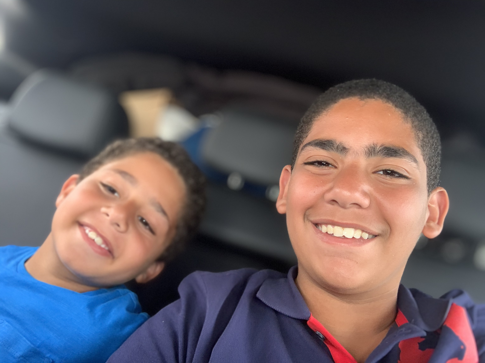

Home
Introduction: Who I am ?
Hi, My name is Yassin Wafik, I'm a 15-year-old High School student at BCCIS, and I made this website. So I may look short, may have a baby face but despite all of that I have big boy hobbies such as: some drawing (but i'm really bad at it), Photography (I'm really good at it), I also love cooking, and baking, and i would consider myself a pretty good chef, and also i'm obsessed with tiny houses and my favorite shows to watch on Netflix are "Tiny House Nation", "The Final Table", and "Explained", also one of my hobbies is I like to criticize anything and everything, but i don't like other people criticizing me because it hurts my feelings. By now I think if you know what my horoscope is then... you're a creep! But for reals i'm an Aquarius and a Capricorn because literally im on the 22nd of January so i'm awkwardly in between the two horoscopes, but i lean more to the Aquarius side, and maybe you are wondering and asking yourself, "What are the characteristics of an Aquarius?". I'm glad you asked that question because i know a little or two about the characteristics of an Aquarius and they are: Very talkative, gets bored of anything in about 30 seconds prior to starting it, and they are very weird, like very, very weird, because i'm an introvert.
How To Be A Better Photographer In 30 Days!
there are many types of photography, from portrait to landscape; and so it is important to understand the fundementals of photography which we will cover on this website and it is important to know every single type at least, so you can cover every aspect of photography, but you can most certainly speacialised in one type. so to start here are some example photos i have taken before: